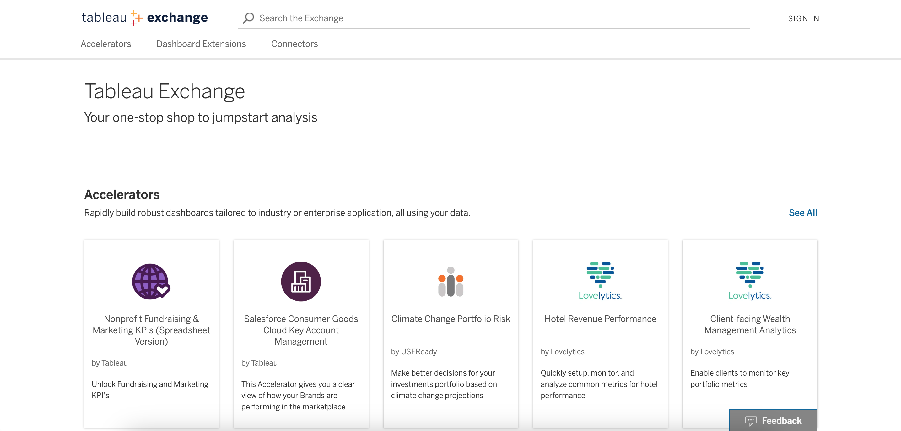

When I started at Tableau in the summer of 2021, Tableau Public was having a bit of an identity crisis. The product team had never had a researcher before, and so was lacking core knowledge of how users were really using the site. As a consequence, the team was in the dark as to how they should continue to advance and adapt the website to give users what they needed. After discussing with two different PMs along with several designers and researchers, I dove into some fairly existential questions such as, “who are the folks Tableau Public is trying to work with?”, “what jobs are they trying to do?” and “how can Tableau Public increase user engagement?” in order to give shape to Public’s product roadmaps for the 2022 fiscal year.
After meeting with stakeholders to refine the research questions, I led a large scale, two-phase mixed methods study to go about uncovering the Jobs to be Done (JTBD) of Tableau Public users.
The first phase of the study consisted of a series of 19, 60 minute semi-structured interviews over the period of 1.5 weeks. I involved several other researchers in the process of reviewing my research plan as well as the hour-long interview script before launch to get feedback. I then identified target interview participants, created a screening survey, and conducted the full recruitment process to gather the participants. I recruited users based on varying levels of Tableau visualization publishing frequency (how often they uploaded visualizations to the Tableau Public website) as well as their experience with data visualization, as I foresaw these playing a role in how someone may use the Tableau Public website materials. I recruited four users for each of four target categories based on those characteristics, along with three pilot participants for a total of 19.
To recruit the external participants, I pioneered a new process for recruitment using web banner intercepts on the Tableau Public website home page. To do this I communicated with Tableau leadership for approval, as well as with the Tableau legal team since nothing of this nature had ever been done before. I also coordinated with marketing to ensure the web banner wouldn’t interfere with any of their ongoing projects. The recruitment method was a success and has since been adopted by the rest of Tableau research to increase recruitment of casual users.
I conducted all 19 of the interviews, with stakeholders and other curious researchers occasionally sitting in to take notes or observe sessions. The results of the interviews were an initial JTBD framework for Tableau Public, which is further detailed below in the “Results” section.
Phase 2 consisted of a large-scale survey. I again employed the web banner intercept recruitment method for the survey, as the goal was to reach as wide a breadth of Tableau Public users as possible. The survey served partially to validate the results from Phase 1, but primarily to quantify the importance and satisfaction of each “job” (from the JTBD framework linked above) to identify areas of high opportunity across the Tableau Public user base. The survey consisted of 11 questions, some likert-style and some open-ended, that was displayed to a random selection of Tableau Public visitors. The survey amassed 217 completions over the course of 2 weeks.
For analysis, I ran 2-population z-tests to determine the significance of certain survey answers when comparing open-ended responses between user groups, and Pearson's chi-squared tests when comparing responses within user groups. As for the 5-point likert scales that quantified importance and satisfaction, I calculated Ulwick’s opportunity scores, and then graphed the score of each “job” using a color-coded bar chart to identify areas of high opportunity.
I can’t get too much into the results, but here’s what I’m allowed to say. From my qualitative analysis from Phase 1, I found that the main motivator for accessing Tableau Public was overwhelmingly a desire to learn. I then created user segmentations along with an initial JTBD framework consisting of 17 main jobs across 4 job themes, with a large number of microjobs, tasks, and outcome statements to support. After analysis, I conducted two initial read-outs of the Phase 1 results, each one being organized slightly differently in order to cater to the different audiences.
From my quantitative analysis from Phase 2, I found similar results to the qualitative portion in that the highest identified opportunity areas were all related to learning in some capacity. I also was able to validate my JTBD job groupings as well as my user segmentations. Additionally, from the results of the survey coupled with the qualitative findings from Phase 1, I identified a fundamental issue with the way Tableau Public is perceived. Users recognize the site as a place where they can go to learn, but the site wasn’t structured in a way to promote that. For this reason, users struggled to understand where to start and how to learn in the most efficient way.
From these findings, I recommended that we restructure the website to more effectively emphasize how users can learn on the site. I also recommended we further investigate how best to promote the use of profiles as portfolio tools, and that we should add more dedicated learning resources. I presented the final recommendations in two more large readouts with a much larger audience, adding onto the Phase 1 readouts that had already been presented.
My findings spurred a rejuvenation of the Tableau Public website. With a new understanding of what users were actually coming to the site for (overwhelmingly to learn), Public’s roadmap for 2022 was shaped heavily by my findings. Projects that stemmed from this study included a complete homepage redesign to better connect users with the content they wanted to see, further exploration into the use of Tableau Public as a portfolio for one’s work, and the inclusion of more dedicated resources for learning on the site itself.
Tableau Exchange was a very new concept when I joined Tableau - a single place to download add-ons and templates created by the Tableau developer community. From discussions with the three PMs that made up the different product areas of Tableau Exchange, I uncovered that Exchange was struggling with questions surrounding who made up their new user base, the content their users were looking for, and where in the different user journeys Exchange fit in. I decided the best way to pursue answers to these questions was through conducting a Jobs to be Done study.
With this study I took a different approach to the Public JTBD where I began with a qualitative study then corroborated my findings with a quantitative study. This time, prior to launching the qualitative portion of this study I designed and led a 10-person workshop with PMs, designers, researchers, and engineers that were experts in either Jobs to be Done or in the Tableau Exchange product area. Over the course of the two-part workshop I had the participants brainstorm and refine an internal JTBD framework which served as a basis for the interview study. And the qualitative interview study that followed served to validate what we had created internally while simultaneously allowing for new insights to be discovered.
The interview portion of the study consisted of a series of 15, 60 minute semi-structured interviews over the period of 2 weeks. Prior to study launch, I identified target interview participants, created a screening survey, and conducted the full recruitment process to gather the participants. I recruited users based on varying levels of Tableau experience (novice vs experienced, self-reported) as well as whether or not they had downloaded any content from the Exchange in the past 90 days. I also included a category of “potential” users since the Exchange was somewhat new and I wanted to be sure to capture the jobs of a wider breadth of users. I aimed to recruit at least three users for each of the five target categories based on those characteristics and was able to amass a total of 15 participants.
To recruit external participants, I used Tableau Desktop to pull data from Tableau’s internal Snowflake database on users who had downloaded content from either the Exchange or from directly within Tableau Desktop. I then gathered participant emails from Snowflake, cross-referenced these emails with Marketing’s list of users that had opted out of receiving any communications from Tableau, and launched an email recruitment campaign using the screener survey I had created for that purpose.
After the sessions were run while conducting my qualitative analysis and JTBD framework construction, I cross-referenced findings with other existing JTBD studies within Tableau and Salesforce. I knew the user profiles of those using the Exchange would likely have a large overlap with those using other areas of both products.
From my analysis I found that novice users possessed different “jobs” than experienced users, but whether a user was currently using content on the Exchange or not didn’t seem to have any impact – users wanted to accomplish the same things regardless of whether they had visited the Exchange or not. For the JTBD framework, I found 16 main jobs across five job themes, along with a larger number of micro jobs, tasks, and outcome statements.
From my non-JTBD analysis, I found that among experienced and novice users alike, there was very little awareness of the Exchange to begin with, which offers an explanation of why the jobs weren’t terribly dissimilar amongst those who had used content on the Exchange or not. One of the root causes of this was bad search engine optimization - the Exchange simply wasn’t popping up on Google. Coupled with very little marketing toward the site, this meant that users as a whole were very unaware of the offerings available to them despite expressing a desire for them.
Additionally, I found that the main motivations behind using Exchange were to increase a user’s efficiency, and I uncovered a good deal about users’ trust in the site content. I also gained an understanding of where the Exchange fell into the user journey, and how users were being led to the site if not through google searches.
I shared these results through two larger read-outs and a series of smaller readouts to different audiences, each one again being organized slightly differently in order to cater to the different crowds.
As a result of the JTBD framework and other questions answered about the Exchange, the Exchange team immediately began shifting their focus to improving the visibility of the website. SEO improvements followed, along with better integration of the Exchange into other areas within the Tableau Ecosystem (Tableau Desktop, Tableau Online, etc.). From findings related to user trust of the content, a decision was made to not yet open up the Exchange to a broader number of developers, but to keep only a more curated selection of content. And finally, similar to the Public JTBD, a homepage redesign was initiated in order to increase user understanding of the content available and better cater to the jobs users were attempting to accomplish on the site. This homepage redesign consisted of a heuristic evaluation as well as a user testing study, and culminated in what you see now on the Exchange home page.
